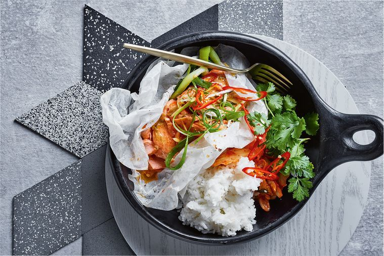

Ocean trout with miso butter

Preparation time:
2 hours
INGREDIENTS
- 8 spring onions, trimmed
- 80g butter, softened
- 1 tbs white miso paste
- 1/2 tbs soy sauce
- Finely grated zest of 1 lime & juice of 1/2, plus wedges to serve
- 1 tsp honey
- 4 (180g each) ocean trout fillets, skin removed, pin-boned
- 1 long red chilli, thinly sliced
- 2cm piece ginger, cut into matchsticks
- Steamed rice
- Kimchi
- Coriander leaves
METHOD
-
Preheat oven to 220°C. Cut four 40cm x 30cm sheets of baking paper.
-
Place spring onions in a heatproof bowl, cover with boiling water and
stand for 2 minutes to soften. Drain and set aside.
-
Combine butter, miso, soy sauce, lime zest and juice and honey in a
bowl.
-
Lay out the pieces of baking paper on a bench. Place 2 loosely coiled
spring onions in the centre of paper. Spread butter mixture all over
each piece of trout and place on top of spring onions. Scatter chilli
and ginger on top of each. Bringing edges of paper together, loosely
close to seal parcels, allowing some space for steam to circulate. Bake
for 10 minutes.
-
Remove the parcels from the oven and stand for 2 minutes before opening
parcels. Serve with cooking juices, steamed rice, kimchi, coriander
leaves and lime wedges.
Japanese Cuisines
Main Menu